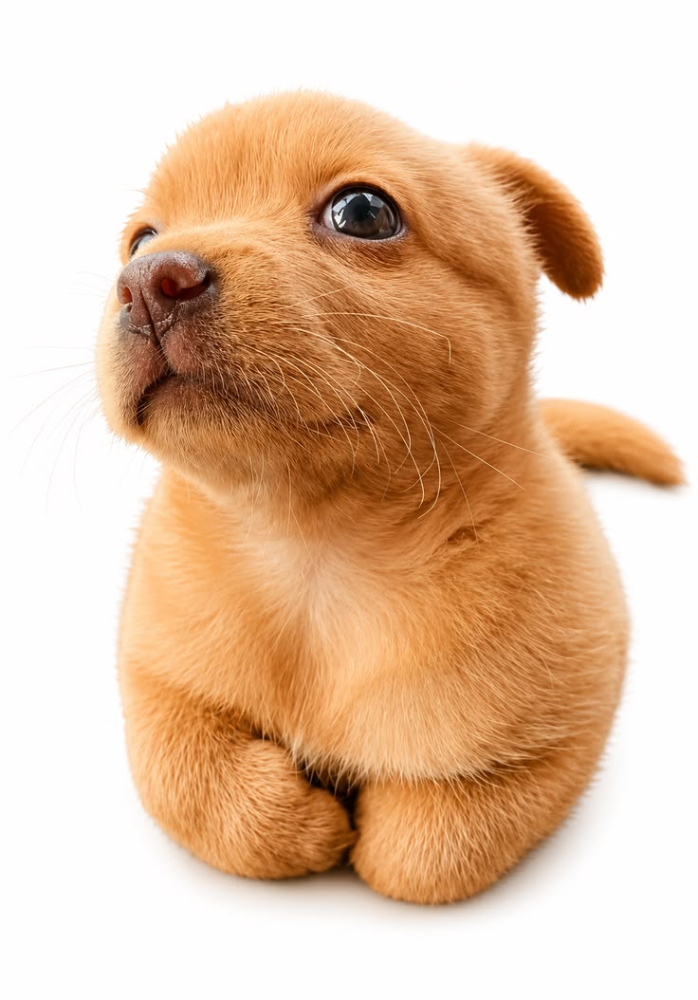
Mascota Pepito
- Edad: 6 meses.
- Tamaño: Pequeño.
- Descripción: Cachorro juguetón, ideal para familias activas con niños y espacios amplios.
Jane Doe Cuidadora
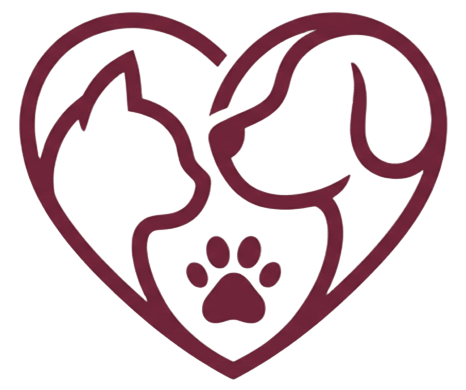
AdopPetSomos una fundación dedicada al rescate, rehabilitación y reubicación de mascotas en situación de abandono, trabajando para darles una segunda oportunidad en hogares responsables. Nos enfocamos en transformar vidas conectando a animales extraordinarios con familias dispuestas a brindarles el amor y el cuidado que merecen.
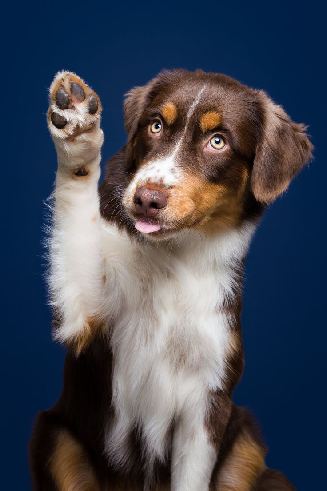
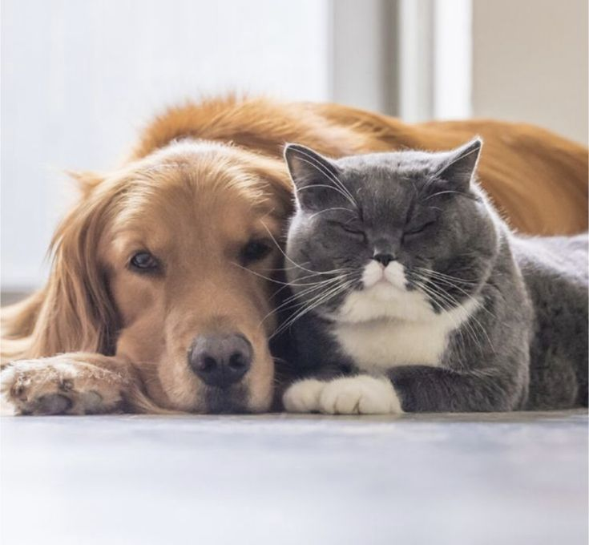
Asistencia médica para tu mascota. Contamos con un personal especializado para tratar a tu mascota.
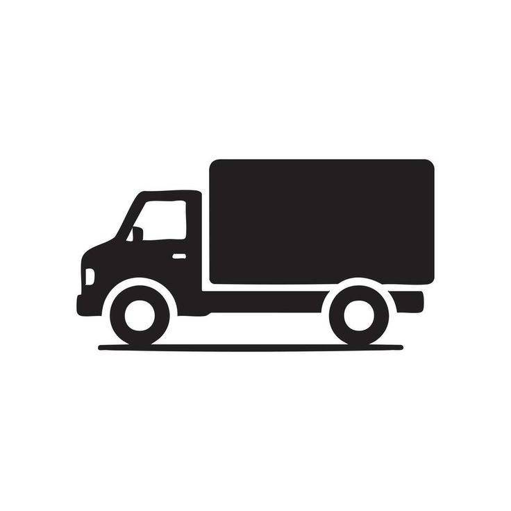
¿Se te dificulta llevar a tu mascota? Contamos con servicio de transporte para llevar y traerte a tu mascota al adquirir asistencia médica o de baño.

Jane Doe Cuidadora
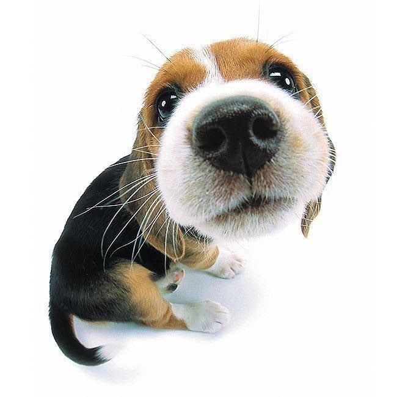
Meiling Kov Cuidadora
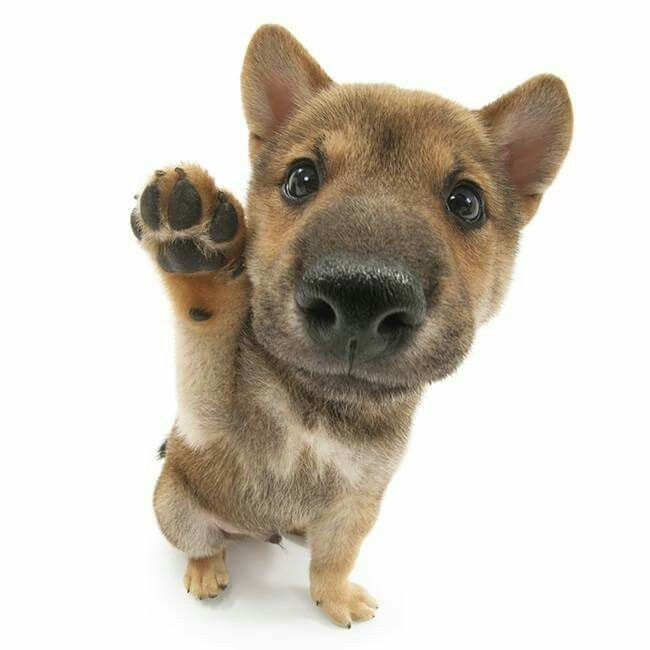
Janna Montane Cuidadora
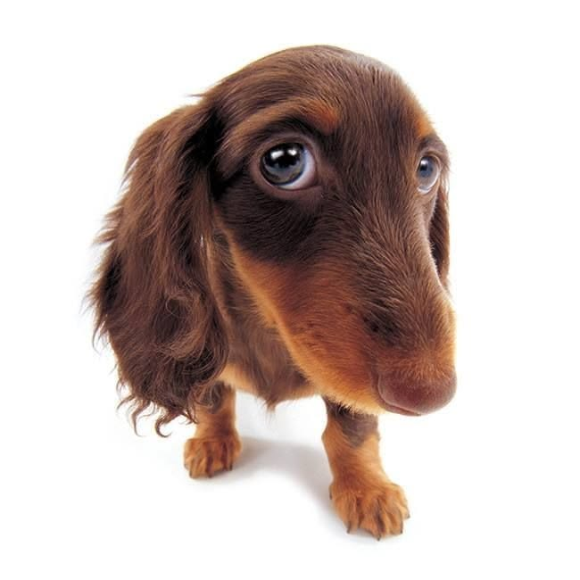
Hanna Parker Cuidadora

Elige la fecha y hora que mejor se adapten a tu rutina en nuestro calendario digital para agendar tu entrevista y visitarnos para conocer a las mascotas disponibles.
El proceso de adopción incluye la firma de un contrato legal donde te comprometes a cuidar y proteger a la mascota durante toda su vida.
Todas nuestras mascotas se entregan esterilizadas, desparasitadas y con su esquema de vacunación al día certificado en su carnet médico oficial según su edad.
La entrega de la mascota se realiza directamente en nuestro refugio o coordinando un punto de encuentro seguro una vez que tu solicitud haya sido completamente aprobada.
Garantizamos el estado de salud, vacunación y acompañamiento continuo para tu nueva mascota.
El proceso de adopción es totalmente gratuito. Solo se solicita un aporte voluntario opcional para apoyar el carnet médico y las vacunas del peludito.
Sí, entregamos a las mascotas desparasitadas, esterilizadas y con su primera consulta de control veterinario incluida sin costo adicional.
Nuestro equipo evalúa el formulario y agenda la entrevista en un plazo de 24 a 48 horas hábiles después de realizar la solicitud.
Ser mayor de edad, presentar una copia de tu documento de identidad, comprobante de domicilio y disponer de un espacio adecuado para el bienestar del animal.
| Tipo Mascota | Cuidados Esenciales | Inversion Mensual |
|---|---|---|
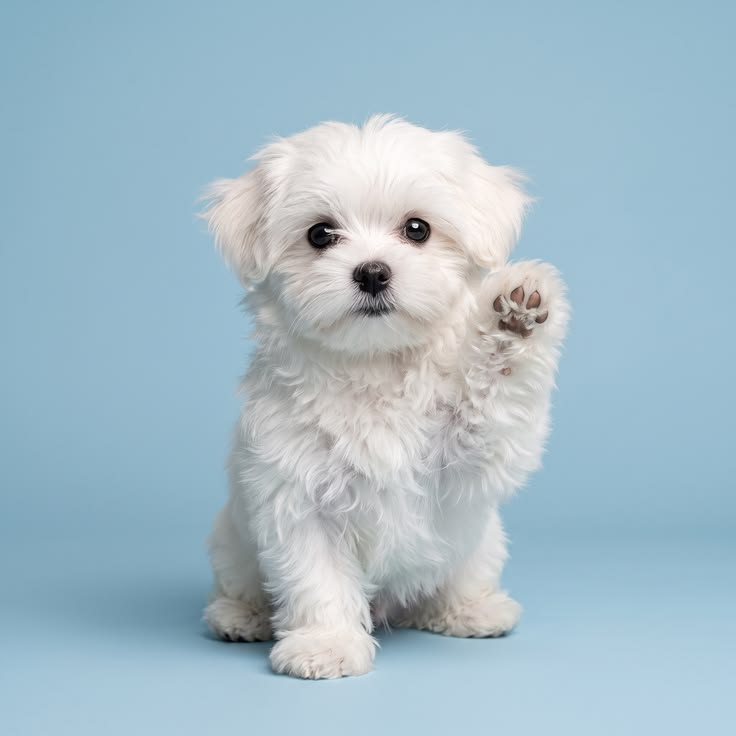 Perro Pequeño |
Alimento de alta calidad, cepillado 2 veces por semana y paseos diarios cortos. | $120.000 COP |
| Perro Mediano | Alimentación balanceada, ejercicio constante y desparasitación cada 3 meses. | $180.000 COP |
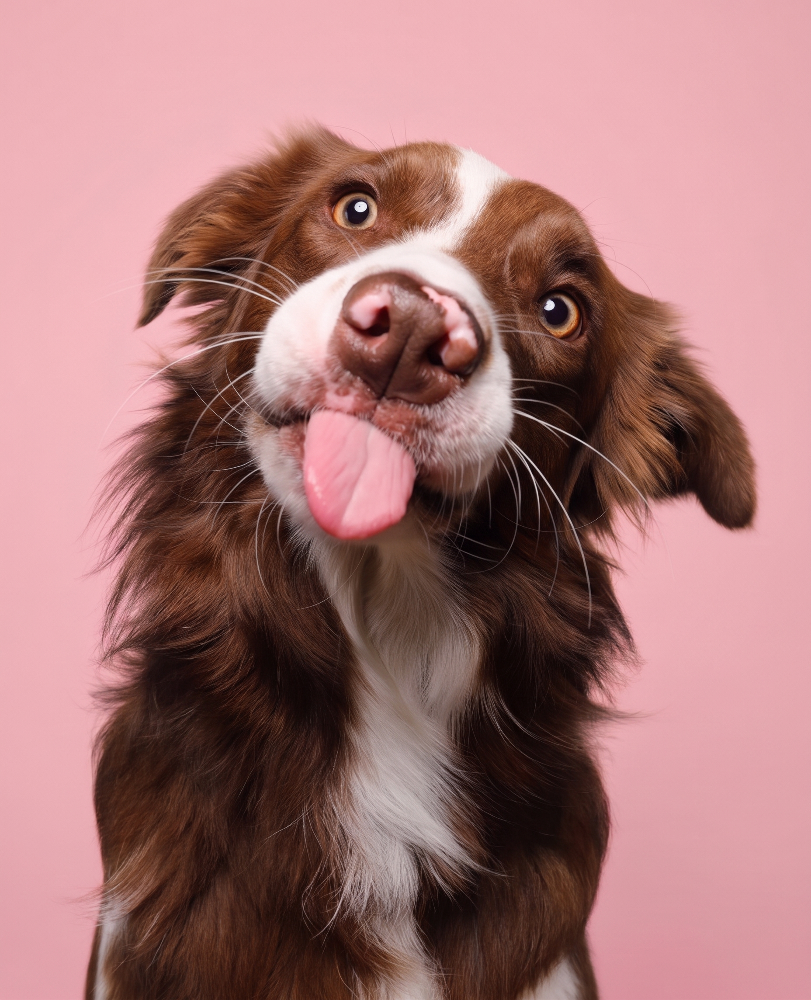 Perro Grande |
Dieta alta en proteína, espacio amplio, entrenamiento y vacunas anuales | $250.000 COP |
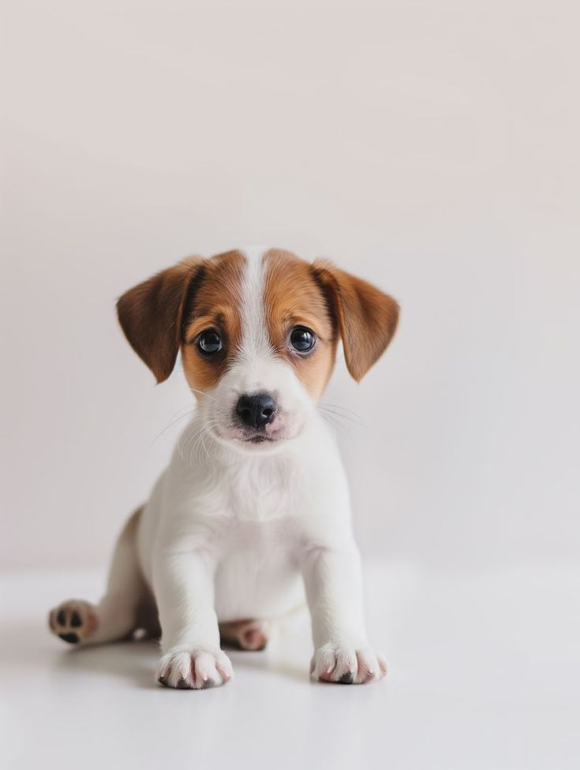 Perro Pequeño |
Esquema completo de vacunación, alimento húmedo y consultas mensuales. | $200.000 COP |
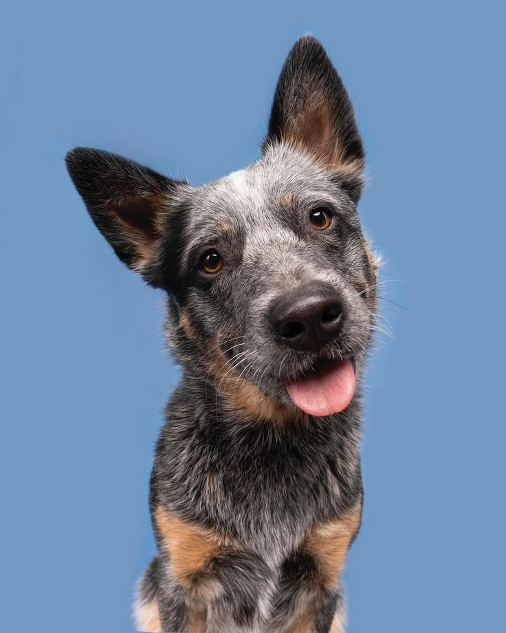 Perro Mediano |
Chequeos veterinarios frecuentes, suplementos articulares y comida blanda. | $200.000 COP |